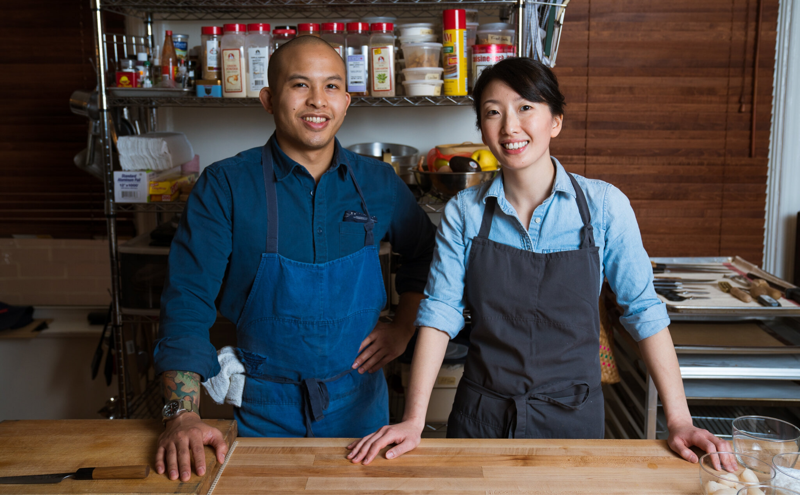

Where Tradition Meets Taste.
HELLO
Welcome to Kasama Filipino Kitchen, where the warmth of Filipino hospitality meets the richness of our culinary traditions. Immerse yourself in a dining experience like no other. From classic favorites to innovative creations, every dish is a journey through the flavors of the Philippines. Join us for a meal that’s not just food; it’s a family experience.
EXPLORE OUR MENU
DAYTIME
BAKERY
DINNER
LOCATION
Nestled in the heart of Chicago, Kasama calls the vibrant East Ukrainian Village home. We are proud to be part of this dynamic and diverse community, where culture and creativity thrive around every corner.
Our restaurant is just 10 minutes from some of Chicago’s iconic landmarks, making it the perfect destination for both locals and visitors. And yes, we’re just a short stroll from the famous Chicago Bean, adding a dash of Chicago charm to your dining experience!
EXPLORE CHICAGO>
NEWS
Together with Kasama, the World’s First MICHELIN-Starred Filipino Restaurant
Michelin Guide | 29 MAY 2022
Tim Flores and Genie Kwon fly the Philippine flag high as their restaurant in Chicago — Kasama — is recognised as the first MICHELIN-Starred Filipino restaurant in the world.
READ THE FULL ARTICLE>
ABOUT US
Kasama is a bakery and modern Filipino restaurant from chefs Genie Kwon and Timothy Flores located in the East Ukrainian Village neighborhood of Chicago. We look forward to welcoming you!